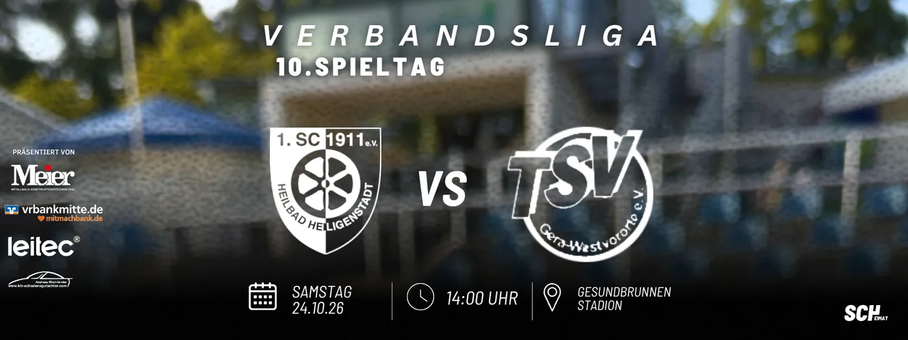
Alle unsere Spiele am Wochenende
🔜 SCHGWO Verbandsliga | 10. Spieltag 🆚 TSV Gera-Westvororte 🕒 Samstag, 24.10.26 | 14:00 Uhr 🏟️ Gesundbrunnenstadion 💻 Der ausführliche Liveticker auf: https://t1p.de/233xa 🎥 Zur Liveübertragung: https://t1p.de/xmitg Unsere Spiele am Wochenende im Überblick Reserve | Kreisoberliga SCH II vs. SG TSV 1861 Bad Tennstedt Sonntag, …
Beitrag lesen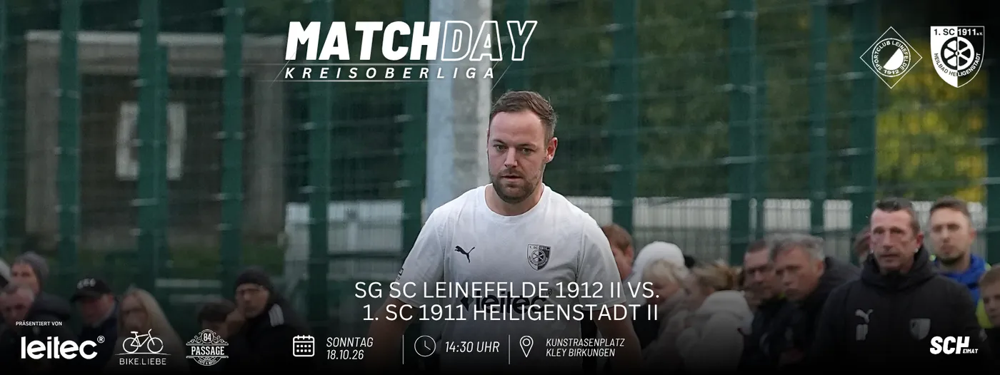
MATCHDAY AM SONNTAG
Das kleine Eichsfeld-Duell: Unsere Zweite zu Gast in Birkungen Wenn am heutigen Sonntag auf dem Kunstrasenplatz Kley in Birkungen der Ball rollt, treffen zwei Mannschaften aufeinander, die sich in der Kreisoberliga bislang nichts schenken. Unsere zweite Mannschaft gastiert um 14:30 Uhr bei der SG SC Leinefelde 1912 II. Mit …
Beitrag lesen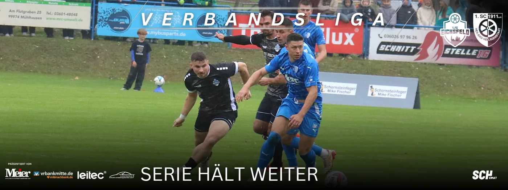
Serie hält weiter
Punktgewinn beim Tabellenführer! Und das vierte Spiel ohne Gegentor. BERICHT FOLGT Spieldaten 1. FC Eichsfeld – 1. SC 1911 Heiligenstadt 0:0 (0:0) 1. FC Eichsfeld Svarc – Dietrich – Rippel (82. Petereit) – Wallbraun (66. Wiesner) – Jakobi (66. Czosnyka) – Sachs – Zimmermann – Oberthür – Pichinot – Göbel – Meißner SC …
Beitrag lesenTabelle Verbandsliga
Ganze Tabelle →| Pl. | Verein | Sp. | TD | Pkt. |
|---|---|---|---|---|
| 1. | 1. FC Eichsfeld | 8 | +19 | 19 |
| 2. | FC Thüringen Weida | 9 | +17 | 19 |
| 3. | SV SCHOTT Jena | 9 | +14 | 18 |
| 4. | 1. SC 1911 Heiligenstadt | 9 | +7 | 17 |
| 5. | SV 09 Arnstadt | 9 | +6 | 16 |
| 6. | SV BW 90 Neustadt/Orla | 9 | +5 | 14 |
Stand: 9. Spieltag (20.10.2026) · Quelle: FUSSBALL.DE
AKTUELLE SPIELE
1. Mannschaft · Verbandsliga
Unsere 2. Mannschaft · Kreisoberliga
Unsere Jugendmannschaften · Team auf jeder Spielkarte
Stand: 22.10.2026 · Ergebnisse: FUPA · Terminänderungen möglich.
WAS LÄUFT WEITER BEIM SCH?
Alle Nachrichten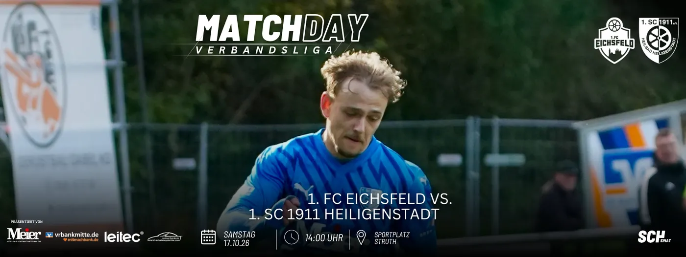
MATCHDAY! AM SAMSTAG
Mit Respekt zum Tabellenführer Ein Spiel, das wahrscheinlich für reichlich Gesprächsstoff sorgen wird. Wenn unser 1. SC 1911 Heiligenstadt heute um 14 Uhr beim 1. FC Eichsfeld auf dem Sportplatz in …
Beitrag lesen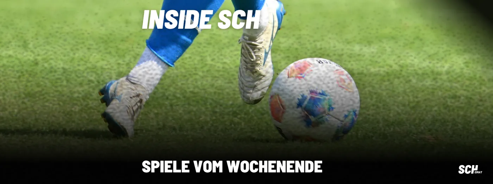
Alle unsere Spiele am Wochenende
🔜 FCESCH Verbandsliga | 9. Spieltag 🆚 1. FC Eichsfeld 🕒 Samstag, 17.10.26 | 14:00 Uhr 🏟️ Sportplatz Struth 💻 Der ausführliche Liveticker auf: https://t1p.de/ja9jb Auf geht’s! 💙🤍 Unsere Spiele am …
Beitrag lesen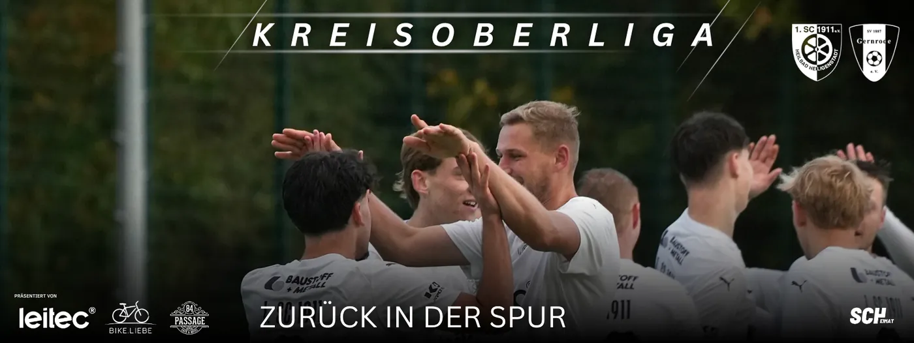
Zurück in der Spur
Vier Tore, drei Punkte: Papst-Elf meldet sich zurück Nach zwei Niederlagen in Folge hat unsere zweite Mannschaft die passende Antwort auf dem Platz gegeben. Am siebten Spieltag der Kreisoberliga …
Beitrag lesen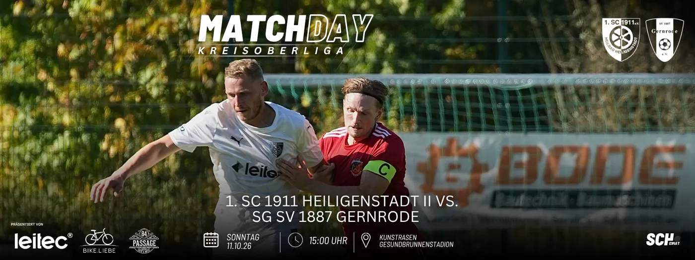
MATCHDAY AM SONNTAG
Papst-Elf empfängt Gernrode Sonntag ist Fußballtag im Gesundbrunnen. Heute empfängt unsere zweite Mannschaft die SG SV 1887 Gernrode auf dem heimischen Kunstrasen. Nach zwei Niederlagen möchte die …
Beitrag lesen
Früh alles klar
Frühe Tore: SCH feiert dritten Ligasieg in Folge Zwei frühe Treffer ebneten den Weg zum Heimsieg: Unser SCH hat gegen den FSV Preußen Bad Langensalza mit 2:0 gewonnen. Robin Vogt und Ole Hoch …
Beitrag lesen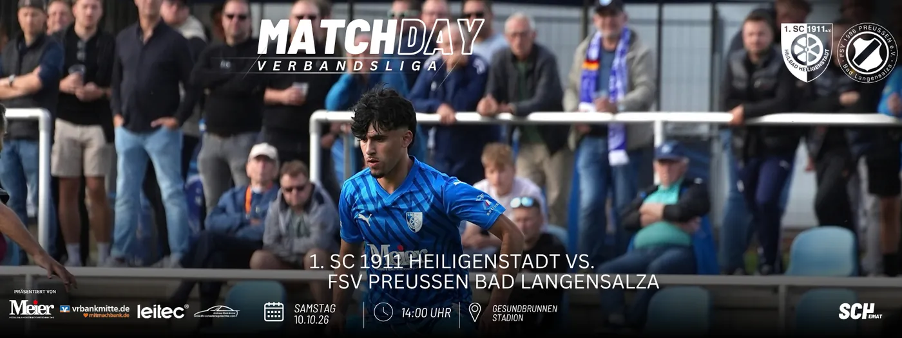
MATCHDAY! AM SAMSTAG
Wieder zusammen im Gesundbrunnen: SCH empfängt Preußen Bad Langensalza Sechs Tage nach dem Pokalspiel gegen den FC Rot-Weiß Erfurt öffnet der Gesundbrunnen wieder seine Tore. Heute um 14 Uhr empfängt …
Beitrag lesen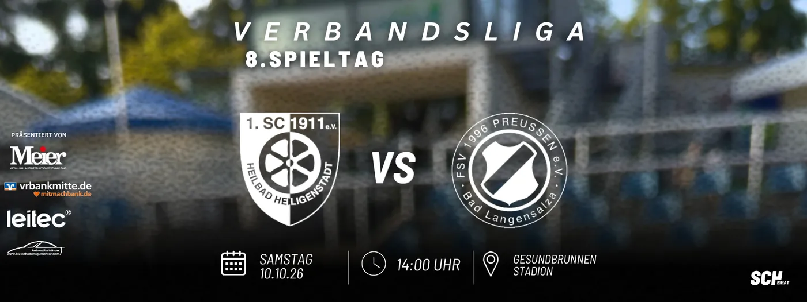
Alle unsere Spiele am Wochenende
🔜 SCHPBL Verbandsliga | 8. Spieltag 🆚 FSV Preußen Bad Langensalza 🕒 Samstag, 10.10.26 | 14:00 Uhr 🏟️ Gesundbrunnenstadion 💻 Der ausführliche Liveticker auf: https://t1p.de/v9gcl 🎥 Zur …
Beitrag lesen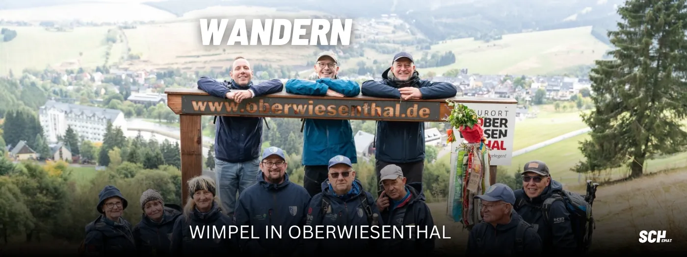
Gemeinsam angekommen
Unsere Wandergruppe bringt den Wimpel nach Oberwiesenthal Als unsere Wanderfreunde am 24. September das Festgelände in Oberwiesenthal erreichten, lag eine lange gemeinsame Reise hinter ihnen. Seit …
Beitrag lesen
UNSER VEREIN.
UNSERE HEIMAT.
Seit 1911 gehört der SCH zu Heiligenstadt. Hier kommen Menschen zusammen, die Fußball lieben und ihren Verein mit Leben füllen.
Gemeinsam etwas bewegen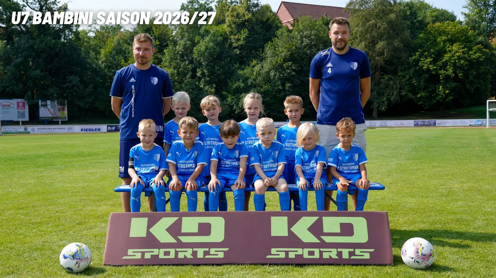
KLEINE KICKER.
GROSSE FREUDE.
Du möchtest beim SCH Fußball spielen? Unsere Geschäftsstelle hilft dir, die passende Mannschaft und einen Termin zum Kennenlernen zu finden.
Probetraining anfragen
MITTENDRIN.
STATT NUR DABEI.
Als Mitglied, Helfer oder Partner: Es gibt viele Wege, den SCH zu unterstützen.
Mitglied werdenNICHTS MEHR VERPASSEN.
Spiele, Termine, Aktionen und Neues aus dem Nachwuchs – direkt in dein Postfach. Kostenlos und jederzeit abbestellbar.
STARKE PARTNER. STARKER VEREIN.
Danke an alle Unternehmen und Unterstützer an unserer Seite.


SOCIAL MEDIA BEIM SCH
Unser SCH.
Zur Facebook-SeiteAuch hier am Ball.
Aktuelle Facebook-Beiträge sind online verfügbar.
Näher dran.
@sc1911heiligenstadtAuf und neben
dem Platz.
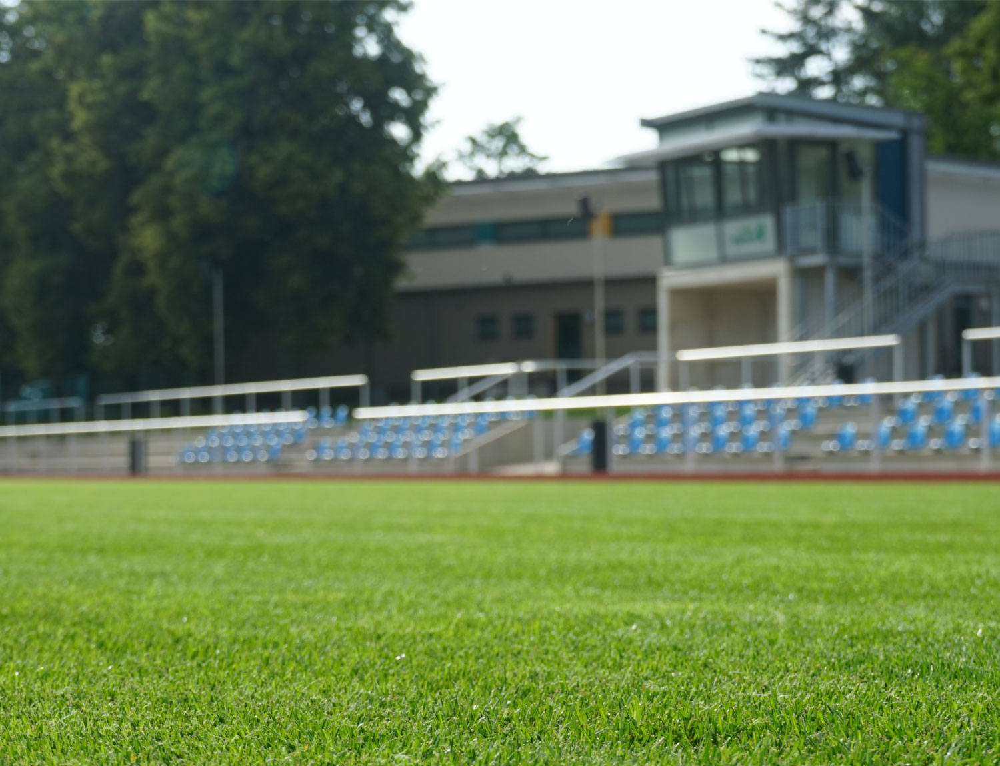
Unsere Jugend.
@sc1911heiligenstadt_nachwuchsVon den Bambini
bis zur U19.